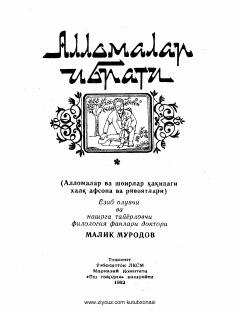

AIBuyuk allomalar va shoirlar haqidagi xalq afsonalari hamda rivoyatlari to'plami.
Ushbu to'plam o'zbek xalqining buyuk allomalari, shoirlari va san'atkorlari haqidagi xalq afsonalari hamda rivoyatlarini o'z ichiga oladi. Kitobda Ibn Sino, Alisher Navoiy, Bobur kabi tarixiy shaxslar haqidagi og'zaki ijod namunalari jamlangan bo'lib, ular xalqimizning ma'naviy merosini aks ettiradi.